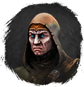

Раглит
Предметы / Обмен
Открыть в интерактивной вики →
| Вес | 8 |
|---|---|
| Цена | 0 |
Описание
Крепкий минерал, необходимый
Требуется для задачи на 80х Еда у Турвиль в Деревне Друидов.
Еда у Турвиль в Деревне Друидов.

Турвиль.Требуется для задачи на 80х
Еда у Турвиль в Деревне Друидов.| Прочный материал, нужный Турвилу. |
Дроп

Применение
|
Как добыть
| Получаем за победу над: |